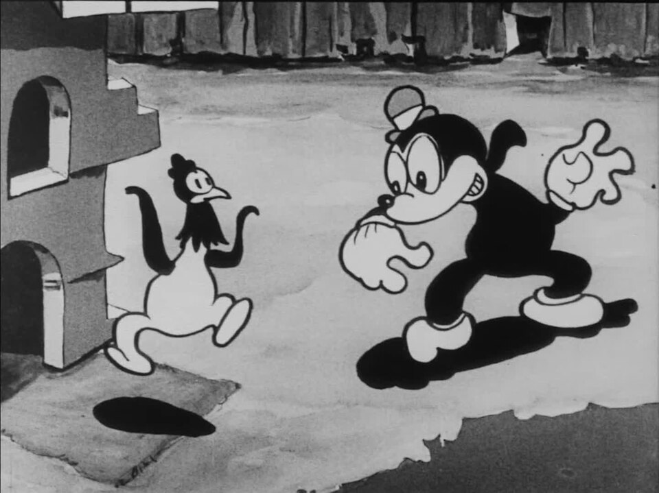
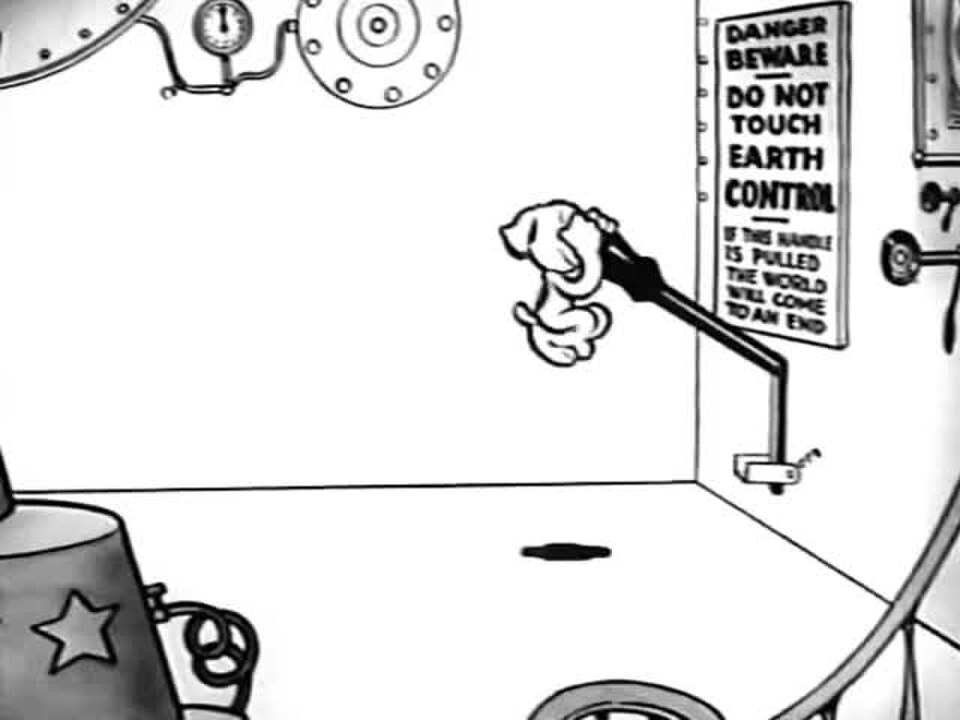
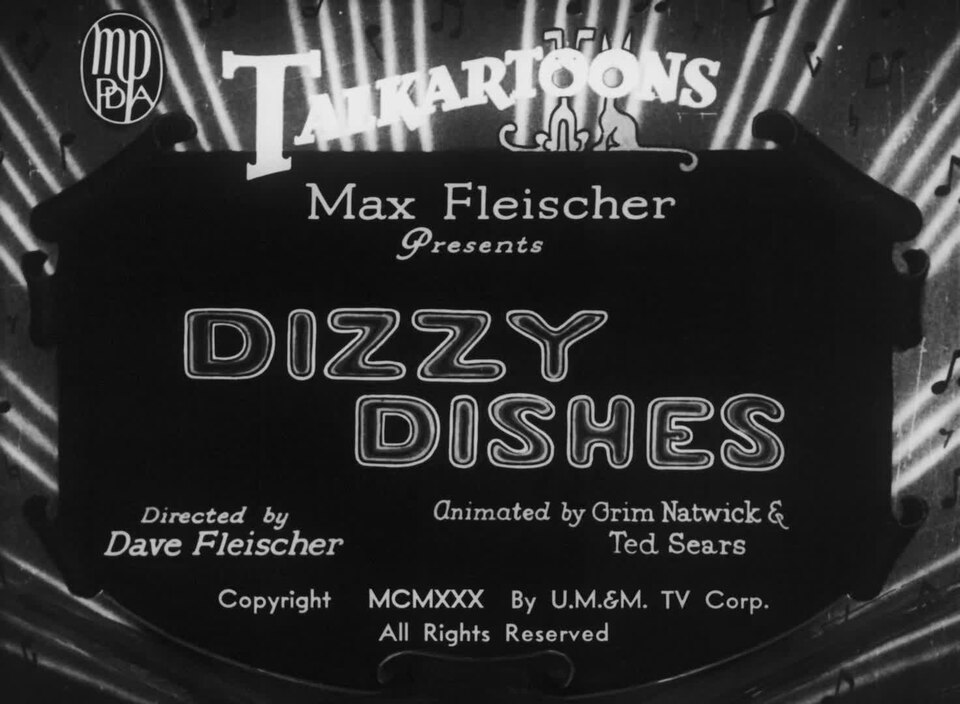
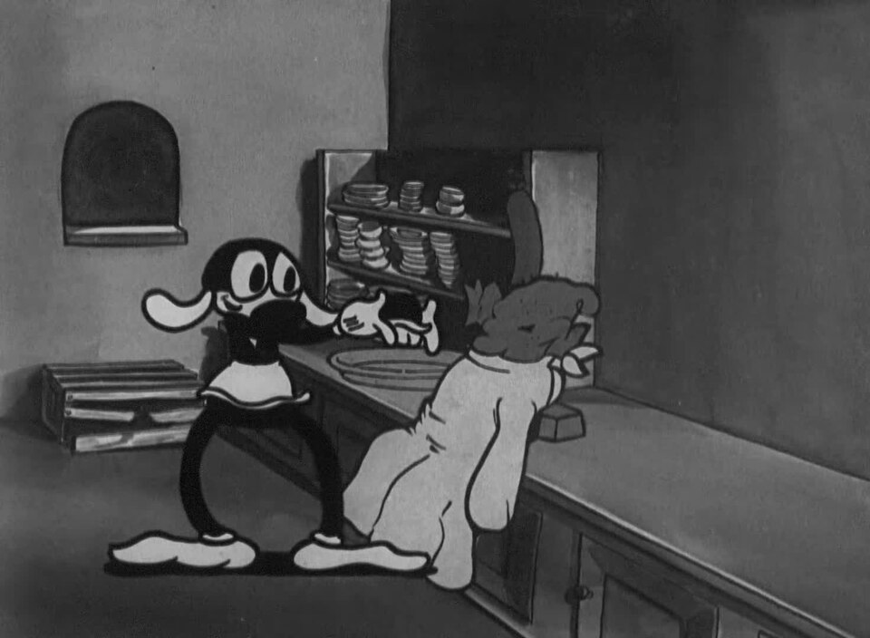
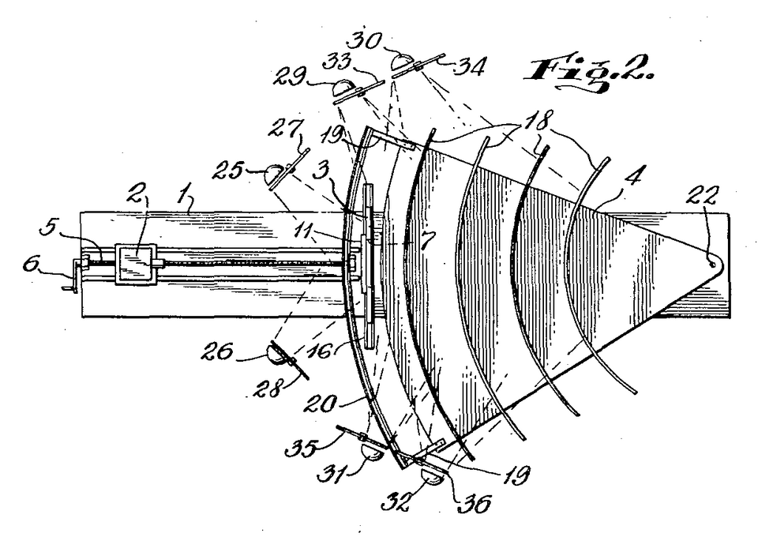

Rotoscoped realism Koko the clown, a figure traced from live-action footage, moves with lifelike weight against a blank white page, showing the rotoscope's fluid realism. Birthday (Out of the Inkwell) (1922) · source

Rubber-hose elasticity and metamorphosis Bimbo and a rooster in rubber-hose pose, limbs bending like tubing and the body squashing with no rigid joints. Swing You Sinners! (1930) · source

Animated everything / surreal urban grit A white-void lab full of levers and dials with a dog hanging from the Earth Control handle, showing props treated as characters in a silent Inkwell short. Koko's Earth Control (1928) · source

Betty Boop design Title card crediting 'Animated by Grim Natwick & Ted Sears' on the cartoon that introduced the prototype Betty Boop. Dizzy Dishes title card (1930) · source

Natwick's sensuous, graceful line and lifelike figure drawing Bimbo leans at a counter beside a heavy customer, showing rounded rubber-hose bodies and gag-ready props in the Natwick-animated cartoon. Dizzy Dishes (1930) · source

Stereoptical tabletop 3D process Patent-style diagram of the Stereoptical Process camera used to shoot miniature 3D sets behind flat animation cels. Fleischer Stereoptical Process camera, patent figure 2 (1933) · source